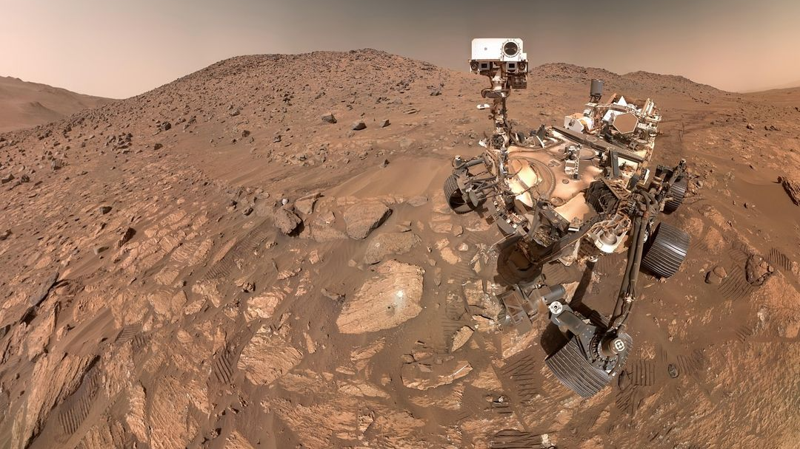
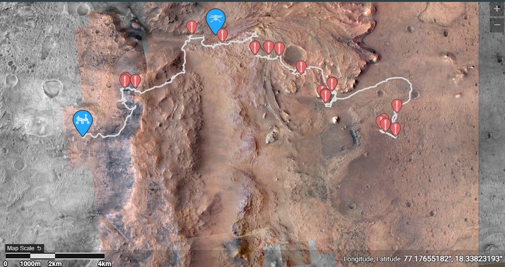

Tornando a exploração de Marte mais acessível aos amantes da ciência
A exploração espacial sempre fascinou a humanidade, mas o acesso aos dados reais das missões costuma ser fragmentado. O projeto RedFrontier nasce para mudar esse cenário. Mais do que um simples visualizador de imagens da NASA, a plataforma foi desenhada para criar uma experiência imersiva, colocando o usuário diretamente no papel de um cientista na Terra. Através de uma navegação por geolocalização cronológica, os entusiastas podem explorar um mapa interativo e seguir o rastro exato dos Rovers pela superfície marciana, acompanhando cada nova descoberta dia após dia (ou melhor, Sol após Sol). Com uma interface retrô-futurista envolvente, aprender sobre o planeta vermelho se torna não apenas acessível, mas uma verdadeira jornada épica de descobrimentos.

Como podemos observar no mapa de telemetria oficial da NASA, cada rover deixa um rastro detalhado de sua jornada. O objetivo do RedFrontier é consumir esses dados brutos de latitude e longitude para reconstruir essa trajetória em um mapa interativo próprio. Dessa forma, o usuário poderá selecionar os pontos de parada no caminho e descobrir exatamente quais fotos e informações foram coletadas naquele exato "Sol" (dia marciano), vivenciando a exploração passo a passo.
